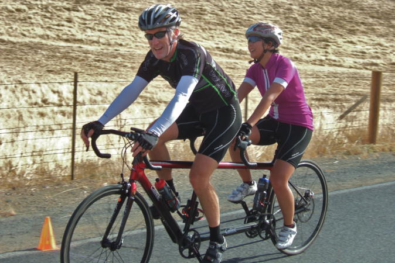

|
 |
 |
|  |
| Dan and Winnie Brehmer solo in for the win in the tandem division. (Bill Bushnell) |
In week 3 of the 2012 Low-Key Hillclimbs we ventured eastward to a previously uncharted climb, the southern slope of Morgan Territory Road, near Livermore. More popularly descended than climbed, this road is nevertheless a scenic, well-paved climb with enough grade variations to create a unique character, and enough total climbing to rank up there in a virtual tie with Old La Honda Road in the Low-Key climb rating system. The relative distance from many of the Low-Key faithful may have reduced the turn-out somewhat relative to Low-Key favorites, but the riders in attendance all experienced a great day of climbing.
It was a cool but certainly not cold morning at the base. After a net gradual first mile with a few steepish rollers, the climb got steeper as riders entered the mist. With poor visibility, the remaining distance was difficult to determine until the grade relented. There the road rose above the fog layer for a fast run to the finish line.
It was a small-group start this week and the first to go was Hybrid-Electric super-champion Bill Bushnell, who soloed to the finish in a characteristically amazing time of 14:32.
Next off was the pair of tandems. Dan and Winnie Brenner took the win here, ahead of the super team of Will and Lynn Van Kaenel.
There were eight men's start groups, seeded by scores so far (or from 2011 if none were available yet this year). Not surprisingly, the top scores came from the first group, with Clark Foy dropping his companions on the steep portion of the climb to reach the finish alone. Carl Nielson was second, also solo, while a group of four sprinted for places 3-6. From the second group, Andy Crews just outsprinted James Porter, Brian Schuster, and Rich Hill in that order.
The women had their own group or had the option of starting with a compatible men's group. Brown Zoners Lisa Penzel and Lynn Sestak both started with men's group 4, to take the top two places in the women's standings this week. Amy Cameron was the first from the women's start group, ahead of Laura Hipp and a super-impressive Lisa Emmerich, Lisa having gained a lot of fitness the past two seasons.
In the team competition, Brown Zone came out on top for the week after starting the minimum three riders, the two women joined by Joe Fant in the men's rankings. Western Wheelers, with recruit Clark Foy leading the way, was a close second, with Sisters and Misters of No Mercy, with second-place Carl Nielson leading, was third.
Strava T-shirt qualifiers indicated with orange background. Note riders can only qualify once per series, so may not be listed even if they beat the target time for this week.
| pl | # | name | team | cat | time | mph | fph | score |
|---|---|---|---|---|---|---|---|---|
| 1 | 129 | Lisa Penzel | The Brown Zone | 45+ | 27:10 | 11.44 | 3209 | 127.20 |
| 2 | 146 | Lynn Sestak | The Brown Zone | 50+ | 29:22 | 10.58 | 2969 | 117.12 |
| 3 | 305 | Amy Cameron | 30+ | 30:07 | 10.32 | 2895 | 114.03 | |
| 4 | 215 | Laura Hipp | Western Wheelers | 4 | 31:31 | 9.86 | 2766 | 108.67 |
| 5 | 79 | Lisa Emmerich | Sr's & Mr's of No Mercy | 50+ | 33:12 | 9.36 | 2626 | 102.84 |
| 6 | 311 | Heidi Fraser | Cat 4 | 50+ | 35:30 | 8.75 | 2456 | 95.79 |
| 7 | 318 | Jacqueline Retzer | Eden Bicycles | 30+ | 36:24 | 8.54 | 2395 | 93.28 |
| 8 | 301 | Bobbi Aniker | 38:38 | 8.04 | 2257 | 87.58 | ||
| 9 | 50 | Alison Chaiken | Sr's & Mr's of No Mercy | 50+ | 42:03 | 7.39 | 2073 | 80.05 |
| 10 | 94 | Christine Holmes | Low-Key | 45+ | 42:32 | 7.31 | 2050 | 79.09 |
| 11 | 312 | Andrea Ivan | Silicon Valley Triathlon | 43:10 | 7.20 | 2020 | 77.86 |
reference time for division Women = 34:05
| pl | # | name | team | cat | time | mph | fph | score |
|---|---|---|---|---|---|---|---|---|
| 1 | 212 | Clark Foy | Western Wheelers | 45+ | 22:41 | 13.70 | 3843 | 126.24 |
| 2 | 230 | Carl Nielson | Sr's & Mr's of No Mercy | 50+ | 23:09 | 13.43 | 3766 | 123.54 |
| 3 | 120 | Rob Manchester | 35+ | 23:41 | 13.12 | 3681 | 120.59 | |
| 4 | 95 | Jared Hudson | SquadraSF | 30+ | 23:42 | 13.11 | 3678 | 120.50 |
| 5 | 56 | Tim Clark | Low-Key | 45+ | 23:46 | 13.08 | 3668 | 120.15 |
| 6 | 44 | Ciaran Byrne | Sr's & Mr's of No Mercy | 40+ | 23:51 | 13.03 | 3655 | 119.70 |
| 7 | 125 | Alan Nevin | IronData Thirsty Bear | 40+ | 24:07 | 12.89 | 3615 | 118.30 |
| 8 | 70 | Andy Crews | Diablo | 40+ | 24:34 | 12.65 | 3549 | 116.00 |
| 8 | 7 | James Porter | Western Wheelers | 3 | 24:34 | 12.65 | 3549 | 116.00 |
| 10 | 319 | Brian Schuster | Dolce Vita Cycling | 25+ | 24:35 | 12.64 | 3546 | 115.92 |
| 11 | 92 | Rich Hill | LGBRC | 45+ | 24:36 | 12.63 | 3544 | 115.84 |
| 12 | 213 | Chris Furgiuele | Dolce Vita Cycling | 35+ | 25:13 | 12.33 | 3457 | 112.84 |
| 13 | 175 | Alexander Komlik | San Jose Bike Club | 45+ | 25:21 | 12.26 | 3439 | 112.21 |
| 14 | 310 | Steve Fielding | 45+ | 25:22 | 12.25 | 3437 | 112.13 | |
| 15 | 231 | Travis Retzer | Eden Bicycles | 4 | 25:26 | 12.22 | 3428 | 111.82 |
| 16 | 324 | Edvard Wendelin | 25+ | 25:28 | 12.20 | 3423 | 111.66 | |
| 17 | 239 | Dennis Van Hoof | Type 1 Diabetes | 35+ | 25:46 | 12.06 | 3383 | 110.28 |
| 18 | 303 | Bill Brier | Team Fremont FFBC p/b Chipotle | 50+ | 25:53 | 12.01 | 3368 | 109.76 |
| 19 | 80 | Joe Fant | The Brown Zone | 50+ | 26:03 | 11.93 | 3347 | 109.01 |
| 20 | 155 | Joseph Sullivan | San Jose Bike Club | 35+ | 26:10 | 11.88 | 3332 | 108.50 |
| 21 | 108 | Joe Karbowski | Team Ryan Powell | 30+ | 26:28 | 11.74 | 3294 | 107.20 |
| 22 | 73 | J.D. Daniels | Eden Bicycles | 35+ | 26:29 | 11.74 | 3292 | 107.12 |
| 23 | 78 | Bill Dvorak | 55+ | 26:31 | 11.72 | 3288 | 106.98 | |
| 24 | 145 | Takanobu Seimiya | Nikon Cycling Club | 40+ | 26:40 | 11.65 | 3269 | 106.34 |
| 25 | 97 | Martin Hyland | Western Wheelers | 55+ | 27:03 | 11.49 | 3223 | 104.75 |
| 26 | 246 | Chris Kovacs | Eden Bicycles | 35+ | 27:06 | 11.47 | 3217 | 104.54 |
| 27 | 315 | Chris Mickelsen | Who would have me | 55+ | 27:53 | 11.15 | 3127 | 101.43 |
| 28 | 142 | Naoto Sato | 45+ | 28:00 | 11.10 | 3114 | 100.98 | |
| 29 | 132 | Ryan Powell | Team Joe Karbowski | 35+ | 28:06 | 11.06 | 3102 | 100.60 |
| 30 | 46 | Gonzalo Carrillo | Team Fremont FFBC p/b Chipotle | 45+ | 28:13 | 11.01 | 3090 | 100.16 |
| 31 | 98 | Brandon Iles | 30+ | 28:22 | 10.96 | 3073 | 99.60 | |
| 32 | 161 | Alan Weatherall | San Jose Bike Club | 50+ | 28:28 | 10.92 | 3063 | 99.23 |
| 33 | 308 | Paul Diac | 25+ | 28:41 | 10.84 | 3039 | 98.44 | |
| 34 | 326 | Brad Ford | Silicon Valley Triathlon | 35+ | 28:56 | 10.74 | 3013 | 97.53 |
| 35 | 317 | Thomas Rabedeau | SLACer | 55+ | 28:58 | 10.73 | 3010 | 97.42 |
| 36 | 304 | Carl Butler | Sr's & Mr's of No Mercy | 55+ | 29:06 | 10.68 | 2996 | 96.94 |
| 37 | 156 | Toshi Tajima | 45+ | 29:09 | 10.66 | 2991 | 96.77 | |
| 38 | 211 | TOM FERREIRA | Eden Bicycles | 5O | 29:30 | 10.54 | 2955 | 95.55 |
| 39 | 159 | Plamen Velikov | SLACer | 29:47 | 10.44 | 2927 | 94.59 | |
| 39 | 306 | Dave Desantos | team batson | 50+ | 29:47 | 10.44 | 2927 | 94.59 |
| 41 | 314 | Peter Maloney | 40+ | 29:57 | 10.38 | 2911 | 94.03 | |
| 42 | 43 | Scott Byer | 45+ | 30:30 | 10.19 | 2858 | 92.23 | |
| 43 | 99 | Peter Ingram | Ind. | 55+ | 30:31 | 10.18 | 2857 | 92.18 |
| 44 | 218 | Terrance Kloeckl | 50+ | 30:42 | 10.12 | 2840 | 91.60 | |
| 45 | 135 | Mihai R. | 30+ | 31:23 | 9.90 | 2778 | 89.48 | |
| 46 | 302 | John Armour | San Jose Bike Club | 50+ | 31:38 | 9.83 | 2756 | 88.73 |
| 47 | 127 | Bart Niechwiej | 35+ | 31:39 | 9.82 | 2755 | 88.68 | |
| 48 | 160 | Greg Watson | Palo Verde Velo | 45+ | 32:00 | 9.71 | 2724 | 87.66 |
| 49 | 164 | Mike Wilkins | team batson | 50+ | 32:08 | 9.67 | 2713 | 87.27 |
| 50 | 147 | Jeff Shute | 30+ | 32:15 | 9.64 | 2703 | 86.94 | |
| 51 | 300 | MichaelsJ. Andalora | Bike Trip/Symantec | 60+ | 32:21 | 9.61 | 2695 | 86.65 |
| 52 | 143 | Wink Saville | 60+ | 32:36 | 9.53 | 2674 | 85.95 | |
| 53 | 169 | Nic Brummell | Atlas | 50+ | 32:41 | 9.51 | 2667 | 85.71 |
| 54 | 321 | Bastian Sopora | Team Fremont FFBC p/b Chipotle | 25+ | 33:14 | 9.35 | 2623 | 84.21 |
| 55 | 84 | Stephen Fong | CyclePath Racing | 45+ | 33:56 | 9.16 | 2569 | 82.37 |
| 56 | 320 | Robert Sexton | Western Wheelers | 40+ | 34:10 | 9.10 | 2552 | 81.78 |
| 57 | 68 | Alex Cortez | Team Fremont FFBC p/b Chipotle | 40+ | 35:32 | 8.75 | 2453 | 78.45 |
| 58 | 54 | Barry Burr | Barry Beams Bike Lighting | 50+/ Cat 4 | 36:00 | 8.63 | 2422 | 77.37 |
| 59 | 243 | Eric Doelling | 50+ | 36:38 | 8.48 | 2380 | 75.95 | |
| 60 | 148 | Gregory P. Smith | 35+ | 37:32 | 8.28 | 2323 | 74.02 | |
| 61 | 29 | Sachin Bhatia | 30+ | 38:04 | 8.16 | 2290 | 72.92 | |
| 62 | 316 | Andy Morozovsky | Eden Bicycles | 55+ | 38:47 | 8.01 | 2248 | 71.50 |
| 63 | 323 | Tim Sutton | Plus 3 | 50+ | 39:23 | 7.89 | 2214 | 70.34 |
| 64 | 327 | Stephen Newcom | 50+ | 53:55 | 5.76 | 1617 | 50.42 |
reference time for division Men = 28:15
| pl | # | name | team | cat | time | mph | fph | score |
|---|---|---|---|---|---|---|---|---|
| 1 | 32 | Dan Brehmer | SLACer | 45+ | 33:17 | 9.34 | 2619 | 93.32 |
| 33 | Winnie Lam Brehmer | SLACer | Stoker | |||||
| 2 | 12 | Will von Kaenel | LGBRC | 50+ | 34:55 | 8.90 | 2497 | 88.70 |
| 13 | Lynn von Kaenel | LGBRC | Stoker |
| pl | # | name | team | cat | time | mph | fph | score |
|---|---|---|---|---|---|---|---|---|
| 1 | 6 | Bill Bushnell | Low-Key | It's Mostly The Bike | 14:32 | 21.39 | 5999 | 113.82 |
reference time for division Hybrid Electric = 16:25
| pl | team | score | riders |
|---|---|---|---|
| 1 | The Brown Zone | 353.34 | Joe Fant, Lisa Penzel, Lynn Sestak |
| 2 | Western Wheelers | 350.91 | Clark Foy, James Porter, Martin Hyland, Laura Hipp, Robert Sexton |
| 3 | Sr's & Mr's of No Mercy | 346.08 | Carl Nielson, Ciaran Byrne, Carl Butler, Lisa Emmerich, Alison Chaiken |
| 4 | Eden Bicycles | 323.48 | Travis Retzer, J.D. Daniels, Chris Kovacs, TOM FERREIRA, Jacqueline Retzer, Andy Morozovsky |
| 5 | San Jose Bike Club | 319.94 | Alexander Komlik, Joseph Sullivan, Alan Weatherall, John Armour |
| 6 | Low-Key | 313.05 | Bill Bushnell, Tim Clark, Christine Holmes |
| 7 | Team Fremont FFBC p/b Chipotle | 294.13 | Bill Brier, Gonzalo Carrillo, Bastian Sopora, Alex Cortez |
| 8 | LGBRC | 293.24 | Rich Hill, Will von Kaenel, Lynn von Kaenel |
| 9 | 288.60 | Brandon Iles, Toshi Tajima, Scott Byer, Mihai R., Bart Niechwiej, Jeff Shute, Wink Saville, Gregory P. Smith | |
| 10 | SLACer | 285.32 | Thomas Rabedeau, Plamen Velikov, Dan Brehmer, Winnie Lam Brehmer |
| 11 | Dolce Vita Cycling | 228.76 | Brian Schuster, Chris Furgiuele |
| 12 | team batson | 181.86 | Dave Desantos, Mike Wilkins |
| 13 | Silicon Valley Triathlon | 175.39 | Brad Ford, Andrea Ivan |
| 14 | SquadraSF | 120.50 | Jared Hudson |
| 15 | IronData Thirsty Bear | 118.30 | Alan Nevin |
| 16 | Diablo | 116.00 | Andy Crews |
| 17 | Type 1 Diabetes | 110.28 | Dennis Van Hoof |
| 18 | Team Ryan Powell | 107.20 | Joe Karbowski |
| 19 | Nikon Cycling Club | 106.34 | Takanobu Seimiya |
| 20 | Who would have me | 101.43 | Chris Mickelsen |
| 21 | Team Joe Karbowski | 100.60 | Ryan Powell |
| 22 | Cat 4 | 95.79 | Heidi Fraser |
| 23 | Ind. | 92.18 | Peter Ingram |
| 24 | Palo Verde Velo | 87.66 | Greg Watson |
| 25 | Bike Trip/Symantec | 86.65 | MichaelsJ. Andalora |
| 26 | Atlas | 85.71 | Nic Brummell |
| 27 | CyclePath Racing | 82.37 | Stephen Fong |
| 28 | Barry Beams Bike Lighting | 77.37 | Barry Burr |
| 29 | Plus 3 | 70.34 | Tim Sutton |